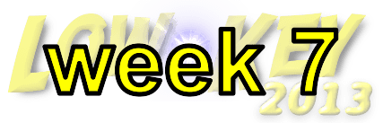

|
 |  |
RSVP for today's climb after the previous week's climb!
| results? | right here! |
| profile |  |
| distance | 2.57 miles (4.1 km) |
| climbing | 1190 ft (362 meters) |
| grade | 8.80% |
| where? | see below |
| when? | 16 Nov 2013 |
| what time | registration 9:00 to 10:00 climb starts @ 10:10 |
| RSVP | check back later! |
| waiver | Please fill one out before the climb! |
| how? |  |
| how much? | $10 (free for juniors and those with volunteer credit) |
| why? | Ask not why; just do! |
| coordinator | |
| volunteers | sign up! |
| aerial view | Google Maps Will Van Kaenel, Google Earth |
| weather | Weather Underground |
| links | Ride With GPS |
| deja-vu? | 2008(8) |
| BikeMap | |
Sorry, folks! Our insurance requires all riders wear helmets during the climb, and we follow the USA Cycling rule against ear buds or other head phones. Rock to tunes before the climb, perhaps, but we need riders to pay attention to what's happening during the climb...
We'll start today at Orinda Community Park on Orinda Way off Camino Pablo, then ride from there to the start, which is quite nearby. The park is directly opposite the fire station in downtown Orinda, on Orinda Way. There's a path from the sidewalk, or a short stairway, leading to the picnic tables we're we'll set up. Some photos are available here!
 The best way to Orinda is BART -- reg is quite close to the Orinda BART station. Alternately, from Berkeley it's a good warm-up up Spruce and down Wildcat Canyon Road. But if you must drive, there's plenty of parking in Orinda.
The best way to Orinda is BART -- reg is quite close to the Orinda BART station. Alternately, from Berkeley it's a good warm-up up Spruce and down Wildcat Canyon Road. But if you must drive, there's plenty of parking in Orinda.
| View Larger Map |
Here's a description: after we begin the climb on El Toyonal (Streesview of El Toyonal from Rio Vista, a convenient place to stage before the climb) we'll take the first left, onto Loma Vista (StreetsView). We follow Loma Vista until it T's back into El Toyonal. We'll turn left here, climbing to a peak. Those who've ridden the Nifty Ten Fifty may know a short-cut here over narrow residential roads. We don't take the short-cut! Instead we remain on El Toyonal a bit longer (StreetsView).
From here, there's a short, twisting descent. This is Low-Key: be careful here! You absolutely do not want to crash here. It's a residential road, and cars could be coming at any corner. A few seconds potentially saved in taking risks simply is not worth it.
At the bottom the climbing begins again, and with a vengance. We turn left onto Vista del Orinda (StreetsView). From here the road we'll ride changes names several times, but we stay on what is obviously the main route: left onto Las Piedras (StreetsView) which essentially turns into Lomas Cantadas (StreetsView). Then that's it: all that remains is the juiciest sustained steepness of the day. We finish at the top, with refreshments further down the road at the parking lot at the bottom of the road to Vollmer Peak.
While unsuited for inclusion into the Low-Key course due to the large number of hikers and bikers, the ride to Vollmer Peak (Strava segment: please be courteous and safe) is definitely worth your attention. You go past the gate, up a paved bike-pedestrian path, and eventually take a left on a paved path to the peak itself. The views are spectacular, and the finishing grind will help flush the lactic acid from Lomas out of your legs (replacing it with new, fresh lactic acid).
For those wanting yet more, for whom Lomas Cantadas leaves a void which can only be filled with even more painful climbing, we're offering a special double feature: after the climb Paul "NiftyTenFifty" McKenzie will lead a group from the summit to the base of Marin Ave, one of the steepest roads of its length in the country. Marin is too busy for a full Low-Key, so you're on your own for this one, but we'll post a form for reporting of Strava activity ID's for this special "just for fun" competition.
Volunteers make Low-Key tick! Without them, we no longer function. Please sign up for any week in the series using our volunteer form! Thanks!!!
Low-Key is all about a group of friends riding up a hill together. It's like any other informal group ride, except we time you to the top and report the results on our web site. But we have no road closures, no lead vehicle, no follow vehicle. We are traffic, sharing the roads with other traffic, following the laws and courtesy which applies to traffic. Think of it as a human-assisted Strava. We're each responsible for our own actions out there, on and off the bike, both as users of the road as as courteous visitors to the neighborhoods we pass through. "Ceci n'est pas un race".